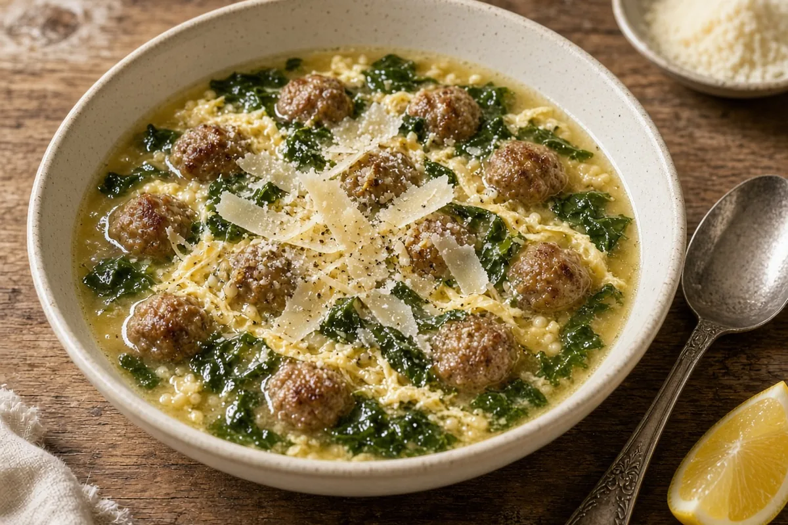

Italian Wedding Soup (Minestra Maritata-Style)
Tiny beef-and-pork meatballs with Pecorino, escarole, and an egg-and-cheese swirl in chicken bone broth simmered with a Parmesan rind. The pasta is cooked separately so it stays firm.

8 servings
By
Yield: 6 to 8 servings
Prep:
Cook:
Total:
Difficulty: Medium
Ingredients
Meatballs (about 60 tiny ones)
- 1/2 lb ground beef (80/20)
- 1/2 lb ground pork
- 1/2 cup fresh breadcrumbs (1 slice of bread, crust removed) soaked in 3 tablespoons whole milk
- 1 large egg, for the meatballs
- 1/3 cup finely grated Pecorino Romano
- 2 tablespoons finely chopped parsley
- 1 small garlic clove, grated, for the meatballs
- 3/4 teaspoon kosher salt, for the meatballs
- 1/4 teaspoon black pepper, for the meatballs
- 1 pinch nutmeg
Soup
- 2 tablespoons olive oil
- 1 medium onion, finely diced
- 2 carrots, finely diced
- 2 celery stalks, finely diced
- 2 garlic cloves, minced, for the soup
- 10 cups chicken bone broth
- 1 Parmesan rind, 2 to 3 inches
- 1 large head escarole (about 1 lb), cored, washed well, and chopped
- 3/4 cup acini di pepe or orzo
- 2 large eggs, beaten, for the ribbons
- 1/4 cup grated Parmigiano-Reggiano, for the ribbons
- Kosher salt, to taste
- Black pepper, to taste
- Lemon wedges, for serving
- Extra Parmigiano-Reggiano, for serving
Instructions
- Mash the soaked breadcrumbs into a paste, 1 minute. Add the egg, Pecorino Romano, parsley, garlic, salt, pepper, and nutmeg, then the ground beef and ground pork, and mix gently with your hands just until combined, 2 minutes. With wet hands, roll into 3/4-inch balls (about 60) and set them on a sheet pan, 15 to 20 minutes. Chill the meatballs while you start the soup.
- Heat the olive oil in a 6-quart or larger HexClad pot over medium heat. Cook the onion, carrots, and celery with a pinch of salt until soft but not browned, about 8 minutes. Add the garlic and cook 1 minute more.
- Add the chicken bone broth and the Parmesan rind. Raise the heat to medium-high and bring to a gentle simmer, 8 to 12 minutes, then reduce the heat so it stays at a gentle simmer (small bubbles, not a rolling boil).
- Drop the meatballs in a few at a time and do not stir for 2 minutes so they firm up. Simmer about 10 minutes more, until a cut meatball shows no pink and reads 160°F. If it is still pink or under 160°F, simmer 2 to 3 minutes more.
- Meanwhile, bring a medium pot of salted water to a boil and cook the acini di pepe or orzo until al dente, 7 to 9 minutes (check the package). Drain and set aside.
- Stir the escarole into the soup in handfuls if the pot is full, and simmer until tender but still bright, 5 to 7 minutes. Take out the Parmesan rind and season to taste with salt and pepper.
- Turn the soup down to a bare simmer. Stir slowly while you drizzle in the eggs beaten with the Parmigiano-Reggiano, then stop stirring and leave it alone for 1 minute so the egg sets into soft ribbons.
- Put a spoonful of pasta in each bowl and ladle the soup over it. Top with more Parmigiano-Reggiano and a squeeze of lemon, 2 minutes.
Notes: Keep leftover pasta separate from the soup; mixed in, it turns mushy overnight. The soup reheats well and freezes for up to 3 months without the pasta. If you cannot find escarole, curly endive is the closest match. Spinach works too, but add it in the last 2 minutes. Homemade broth from roasted chicken backs or feet gives the soup body from its gelatin. A 6-quart pot will be quite full when the escarole first goes in; an 8-quart pot is more comfortable.